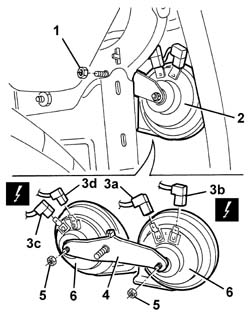

5550B30 l/h or r/h horn (one) - r+r
- Path
- Procedures > 55 ELECTRICAL EQUIPMENT > 5550 MANOEUVRING AND WARNING SIGNALS > 5550B horns > 5550B30 l/h or r/h horn (one) - r+r
- Kind
- repair procedure (removal / refitting; the operation number is the code)
- Applies to
- all engines; all production periods
- Interactive page
- https://sloeber94.github.io/elrnDB-a147/en/#/3025572
Applies to: all engines; all production periods
 Removing
Removing
 Refitting
Refitting7055B42 Additional FRONT WHEEL ARCH (one), left or right - R.R. (right side).
1. Undo the nut.
2. Move the horn unit and bracket slightly.
3. Disconnect the electrical connections for the horns (1a, 1b, 1c, 1d).
 | Name | Connector |
|---|---|---|
3a | Low-tone horn |
| Name | Connector |
|---|---|---|
3b | Low-tone horn |
| Name | Connector |
|---|---|---|
3c | High-tone horn |
| Name | Connector |
|---|---|---|
3d | High-tone horn |
4. Recover the horn unit and bracket.
5. Undo the bolt fixing the horn.
6. Remove the horn.

Applies to: all engines; all production periods
Refitting
RemovingCheck that the horn is not damaged and test its operation.
Refit the horn fixing it using the nut.
Connect the electrical connection.
Position the horn unit and bracket and secure it using the nut.
7055B42 Additional FRONT WHEEL ARCH (one), left or right - R.R. (Right side)
Topics linked from this page (5)
- 7055B42 Additional FRONT WHEEL ARCH (one), left or right - R.R.
- P10A High-tone horn ( Connectors )
- P10B High-tone horn ( Connectors )
- P11A Low-tone horn ( Connectors )
- P11B Low-tone horn ( Connectors )